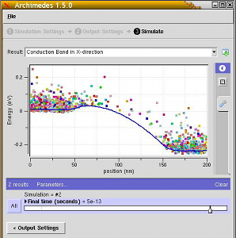
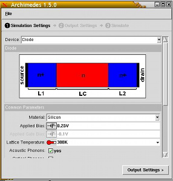

Archimedes


|
Archimedes |
|
|  | A GUI for Archimedes is on nanoHUB! You can run it on the fly! Just go to www.nanohub.org/tools/archimedes (you will have to register to run it, but it is totally FREE) |  |
Table of Contents |
Archimedes is the GNU package for semiconductor device simulations that has been released for the first time on 2005 under GPL. It has been created by Jean Michel Sellier who is, since then, the leader of the project and the main developer. It is a Free software and thus it can be copied, modified and redistributed under GPL. This is the one of the big advantages of using Archimedes.
Archimedes belongs to the well-known family of TCAD software, i.e. tools utilized to assist the development of technologically relevant products. In particular, this package assists engineers in designing and simulating submicron and mesoscopic semiconductor devices. In a next-future version Archimedes will also be able to simulate nanodevices, using the Wigner formalism. Today Archimedes is used in several big companies for simulation and production purposes.
Archimedes is also useful for teaching purposes since everybody can access the sources, modify and test them. Today, it is used for teaching courses in several hundreds universities all around the world. Furthermore, a simplified version, developed for students, is available on nanoHUB.org.
The Ensemble Monte Carlo method is the method that Archimedes uses to simulate and predict the behaviour of a devices. Being the Monte Carlo very stable and reliable, Archimedes can be used to know the characteritics of a device even before this last is built.
The physics and geometry of a device is described simply by a script, which makes, in this sense, Archimedes a powerful tool for the simulation of quite general semiconductor devices.
Archimedes is able to simulate a plenty of physics effects and transport for electrons and heavy holes in Silicon, Germanium, GaAs, InSb, AlSb, AlAs , AlxInxSb, AlxIn(1-x)Sb, AlP, AlSb, GaP, GaSb, InP and their compounds (III-V semiconductor materials), along with Silicon Oxide, the applied and/or self-consistent electrostatic and magnetic fields by means of Poisson and Faraday equation. It is, also, able to deal with heterostructures.
Archimedes has been created after observing the situation of semiconductor simulations around the world. One easily observes that the all codes developed for simulation are usually not free and/or proprietary codes. That is a very bad situation, at least for accademic purposes, since it forces people to reinvent the wheel everytime a piece of code is needed. This surely slows down the progress of Science (immagine you had to rediscover the Newtonian laws every time you need them...).
The actual situation is that we have a huge amount of papers describing a lot of numerical methods for advanced simulations of semiconductor devices, but nobody can access a single code on which to build new and even more advanced methods.
So, today, every university (and even every group in a university) has its own Monte Carlo simulator, its own NEGF simulator and so on.. Would not it be better if we could avoid this incredibile duplication of efforts all around the world?
That is why Archimedes has been created...
Please remember that the development of GNU archimedes is a volunteer effort, and you can also contribute to its development. For information about contributing to the GNU archimedes Project and/or request of enhancements and new features, please contact me at jeanmichel [dot] sellier [at] gmail [dot] com.
You can download version 2.0.0 of Archimedes via http or via ftp.
All other versions or archive formats of Archimedes can be found on http://ftp.gnu.org/gnu/archimedes/ [via http] and ftp://ftp.gnu.org/gnu/archimedes/ [via FTP]. It can also be found on one of our FTP mirrors.
A first draft of complete Archimedes manual in PDF (121 pages).
The package included and complete Archimedes documentation in HTML, in PDF and a tarball containing the source files in latex.
Some examples of simulations:
Announcements about Archimedes and most other GNU Software are made on <info-gnu@gnu.org>.
There is also a special list used for reporting bugs, <bug-archimedes@gnu.org>. For details on submitting a bug report, please see the section Report a Bug below.
To subscribe to any Archimedes mailing list, please send an empty mail with a Subject: header line of just "subscribe" to the relevant -request list. For example, to subscribe yourself to the main list, you would send mail to <bug-archimedes-request@gnu.org> with no body and a Subject: header line of just "subscribe".
Please remember that development of Archimedes is a volunteer effort, and you can also contribute to its development. For information about contributing to the GNU Project, please read How to help GNU.
If you think you have found a bug in Archimedes, then you should send as complete a report as possible to <bug-archimedes@gnu.org>.
Archimedes is currently being maintained by <jeanmichel.sellier@gmail.com>.
Related projects :